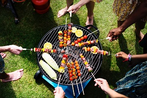

George Foreman Caught Grilling Again!
by Gregory ThompsonIt's always a hoot to have an awesome cook-out on a fall day. We've been having State-Wide contests on who can grill up the best Slab-O-Meat for the past seventeen years and we've yet to have seen anyone worth mentioning swing by until now! The Famous, The Amazing, The Miracoulous, GEORGE FOREMAN has finally came all the way to our nick of the woods to grill us up a masterpiece on his (patented) George Foreman Grill! Of course, we're not sponsored or anything - by golly would we like to be! Regardless, it's always a wonder to see what this godsend can make! No one would have guessed that he would have started out with his one-and-only George Foreman Grilling Sauce and George Foreman Grilling Utensils to set up his Slab-O-Meat for the Great Grillout. And absolutely NO ONE would have ... continue to full article
